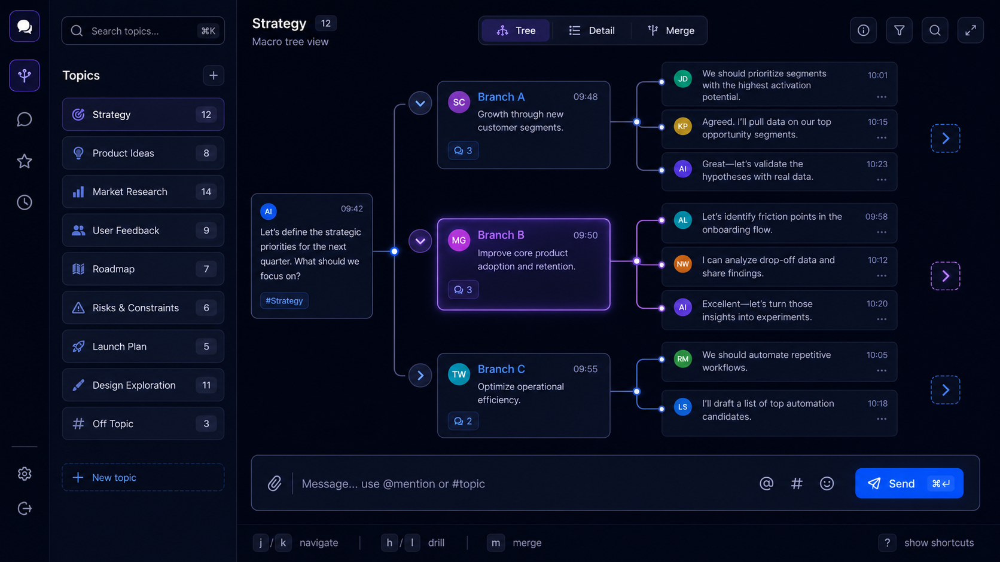
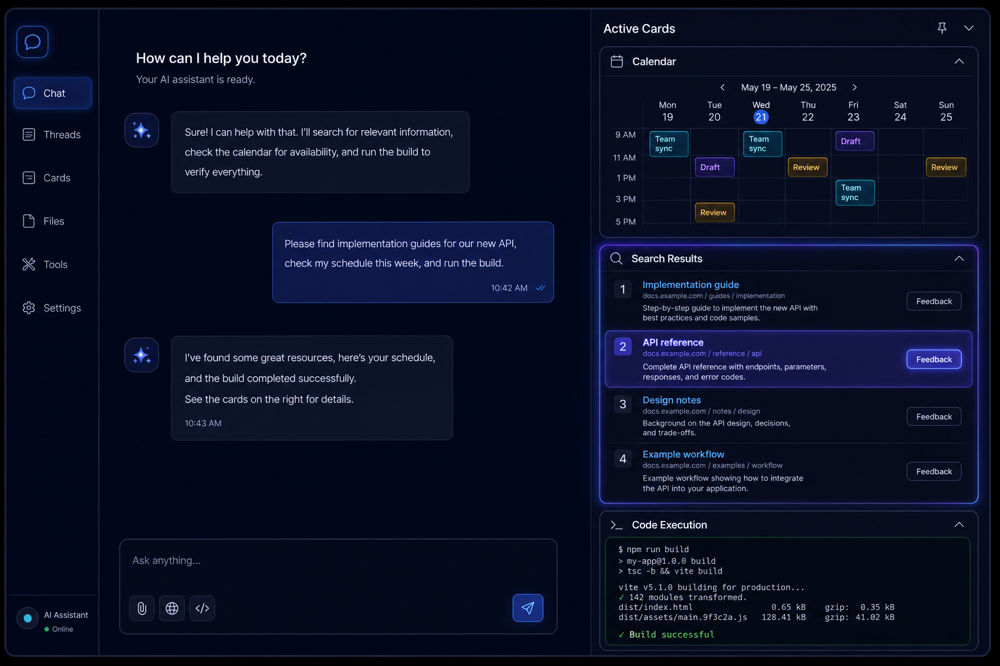
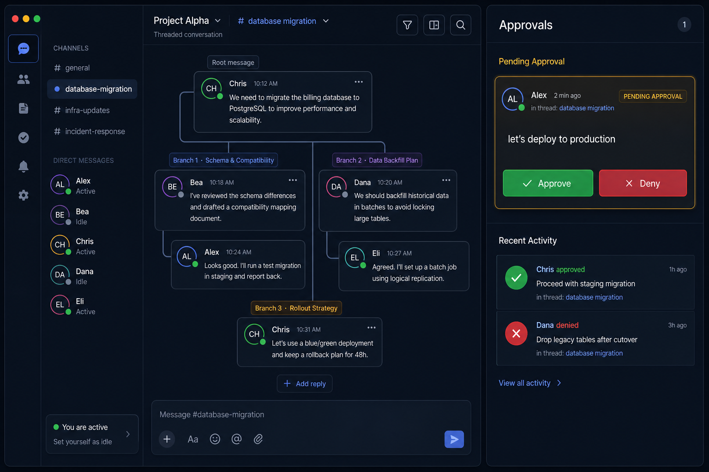
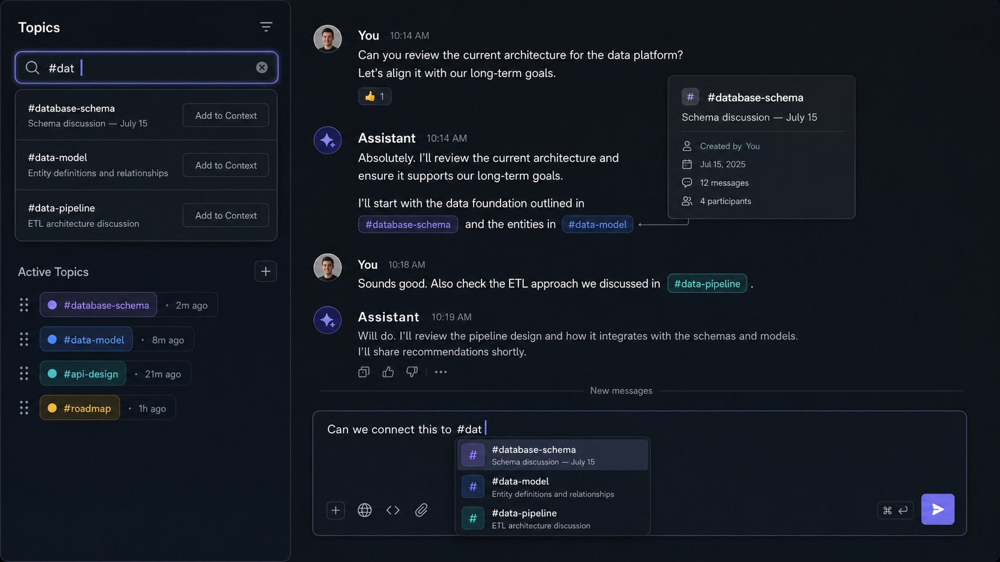

An interface that has interfaces. The web OS where humans and AI agents collaborate through a living conversation tree.
Every AI chat interface today — ChatGPT, Claude, Copilot, Gemini — is built on the same foundation: a linear scroll log designed for human-to-human conversation. This works for asking a question and getting an answer. It fails catastrophically for multi-session projects, deep exploration, team collaboration, and the kind of sustained human-agent partnership that AI promises but hasn't delivered.
Canopy OS is the first interface purpose-built for human-agent collaboration. It replaces the scroll log with a living conversation tree — every message is a node that can branch, merge, carry state, and be referenced across contexts. The agent's memory IS the tree. The interface IS the memory. They are the same thing.
But Canopy goes further. It is a web OS with a chat window — dynamic micro-applications called Cards surface as you work. Each Card has its own database, its own UI, and its own state machine. The agent designs the interface it wants to use to communicate with you. Skills become interactive apps. The file system becomes the knowledge base. One surface for everything.
Canopy OS never replaces your existing tools. It doesn't ask you to give up Obsidian, Hermes, or your chat apps. It is the chat app FOR that stuff — the missing surface where all of it comes together.
"The agent designs the interface. The human directs the work. The tree remembers everything."
Users of AI agents do not need another undifferentiated chat window. They need sustained, multi-session collaboration where context persists, branches don't pollute, and the agent's thinking is visible and interactive.
Existing chat tools are optimized for one interaction pattern: message in, response out, scroll up for history. This breaks under real use:
| Failure Mode | What Happens | Real Cost |
|---|---|---|
| Multi-session fragmentation | 50 separate chat threads with zero connection between them | Context lost across sessions. Agent has no memory of prior work. |
| Tangent pollution | Deep exploration of one topic derails the main thread | You lose the original context. Can't go back without scrolling. |
| Invisible context window | You don't know what the agent remembers or has forgotten | Critical context dropped silently. Agent makes decisions on incomplete data. |
| No collaboration primitive | No way to share specific context with specific people | Teams can't work with agents together. Solo-only by design. |
| No approval workflow | No distinction between "thinking out loud" and "execute this" | Agents act on unvetted input. Friends can't safely participate. |
| Tool fragmentation | Switching between chat, calendar, files, code, and tools | Context switching costs. Information scattered across surfaces. |
| Online-only | Useless on planes, spotty connections, no local-first architecture | Work stops when connectivity stops. No graceful degradation. |
The industry has been iterating on the same linear chat model since IRC. The model is the bottleneck, not the AI. We are giving agents exponentially more capability while keeping them trapped in a UI paradigm designed for human-to-human texting. Canopy breaks that paradigm.
Canopy replaces the scroll log with a spatial, navigable conversation tree. Every message is a node. Nodes have children, parents, and state. The tree IS the agent's memory — visible, navigable, shareable, and version-controlled.

The full conversation forest at a glance. Every branch is a node with title and status. Zoom out to see structure, drill in to see detail.
Drill into any thread for full context. Linear within the branch but aware of parent/child relationships. The agent knows which path you're on.
Side-by-side comparison of branches. "Show me the database branch and the API branch together." Multiple branches unified into one view.
j/k navigate nodes, h/l drill in/out, m merge selected. Vim-style efficiency for power users. Full accessibility.
Select ANY message in the tree — not just the last one — and reply. A new branch sprouts from that exact node. Replying to the latest extends the current branch. Replying to an older message creates a fork. Multiple parallel explorations coexist without polluting each other. The main thread stays clean. The agent understands branch context — it knows what led here, across every branch.
Select N messages across different branches and reply to all of them at once. The new node has N parent edges. Colored edges show which context came from which source. "Based on your database schema work from Monday AND the API concerns from Tuesday, here's the combined plan..." The agent sees unified context from every referenced message. This builds out what you're able to do — you're not limited to linear thinking.
Canopy is not a chat app with some widgets bolted on. It is a web operating system where the chat window is the shell and Cards are the applications. Each Card is a self-contained micro-frontend with its own HTML, JavaScript, CSS, SQL database, REST API, and state machine. Cards appear inline in the conversation when the agent or user needs them — they are not separate windows, not tabs, not external tools. They are part of the flow.

Each Card type stores data as git-friendly JSONL files. DuckDB queries them directly — no import step, no binary blob. pgREST-style API for the Card's JS to call. Neither the model nor the Card ever writes raw SQL.
Cards ship as Web Components with shadow DOM isolation. Each has its own state machine: sending → pending → bench → active → archived. Cards are first-class nodes in the conversation tree — you can reply TO a card.
While the agent searches the web, executes code, or reads files, Cards show live progress. Highlight results, give feedback, and it goes BACK to the model mid-process. Bidirectional channel between human and agent thinking.
"Turn these messages into a card." The agent extracts structured data from conversation and renders it as a persistent interactive Card. Talk TO the Card to modify it. Cards reference other Cards via #links.
Every Card follows a defined lifecycle. Cards can be replied to — their state is a reply-able target in the tree. Multi-reply includes Cards and messages together.
| State | Meaning | User Can |
|---|---|---|
| sending | Agent is creating or updating the Card | Watch progress, cancel |
| pending | Waiting for data, approval, or user action | Approve, deny, provide input |
| bench | Ready but not currently displayed | Expand to active, archive |
| active | Displayed and interactive in the chat | Interact fully, reply to, extract |
| archived | Collapsed but searchable and restorable | Search, restore, delete permanently |
The Card system IS the Hermes skill system — rendered as interactive UI. A skill that was a text instruction becomes a living Card with its own database, API, and state. This is "a wild extension bolted onto Hermes" — every Hermes skill surfaces as a Canopy Card. Same thing, different lens.
Calendar viewer (Google/iCloud/CalDAV), Search Sessions (live results with highlight+feedback), Code Execution (streaming stdout/stderr), File Viewer (PDF, images, code, CSV, Markdown, JSON, media), Thinking (chain-of-thought steps, collapsible), Deployment Status, Weather, Task Lists, Monitoring Dashboards. Plugins add unlimited more.
Canopy is built for collaboration between humans, agents, and multiple Hermes profiles — all in the same conversation tree. But unlike group chats where everyone has equal agency, Canopy operates on a command structure with approval gates. The agent listens to everyone. It only acts on owner-approved input.

Friends join threads. The agent LISTENS to everyone but only ACTS on owner-approved input. "Delete the database" → tagged "unapproved — waiting for owner." Approve per-message, per-thread, or per-user.
Approval panel preserves FULL message context. You always see what you approved, who said it, when, and why. Immutable audit trail. Never lose the context behind an approval.
Different Hermes profiles join the same tree: coding-hermes, creative-hermes, research-hermes. @mention a profile to route context. Per-profile visibility toggles. Cost-aware selection.
Other people bring their OWN agents. Different Hermes instances federate. Each agent runs on its owner's infrastructure. Two reply modes: public (all see) or direct (owner only).
In multi-user contexts, the agent chooses between two reply modes based on context. The owner can override at any time.
The agent responds in the shared tree, visible to all participants. Used for collaborative discussions, shared research, group decisions.
The agent responds only to its owner — a private message within the shared context. Used for personal recommendations, sensitive analysis, strategic guidance. Others don't see it.
Set your status: "Busy for 3 hours, in meetings." The agent tells people who message you. Pings you for genuinely important things. Handles routine questions autonomously. Calendar-integrated: the agent already knows when you're in a meeting. Configurable interrupt thresholds.
Canopy's topic system is like Slack channels merged with a knowledge base, but alive. The agent auto-detects topic shifts and offers to create topics. You can reference any topic with #hashtag syntax — the agent resolves the reference, fetches that topic's entire conversation tree, and injects it into the current context window.

Type #dat → autocomplete shows #database-schema, #data-model, #data-pipeline. Tab to insert. References render as clickable styled links with hover preview cards.
Search sidebar shows 3 matching topics with previews. Press "Add to Context" — that topic's entire tree is injected into the agent's context. No need to open and read it.
Agent detects topic shifts as you converse. "I think this is a new topic about the database schema — create topic?" Accept, reject, or rename. Contiguous messages with shared subject stay together.
Active → Archived (searchable, read-only) → Deleted. Topics can be merged, split, cross-referenced. Old versions preserved. Nothing is lost unless explicitly pruned.
Canopy OS is engineered for resilience, privacy, and deployment flexibility. The architecture is protocol-agnostic at the transport layer, local-first at the data layer, and federated at the server layer. No single point of failure. No vendor lock-in. No mandatory cloud dependency.
| Layer | Choice | Why |
|---|---|---|
| Backend | Go (canopyd) | Single binary, low memory, fast SSE, WebUI native integration |
| Frontend | React + TypeScript + Vite | PWA with Service Worker, Yjs CRDT integration |
| Tree Database | PostgreSQL | Relational tree state, approval audit log, FTS for topic search |
| Card Database | DuckDB + JSONL files | Git-friendly, OLAP queries directly on files, no import step |
| CRDT Layer | Yjs (Y.Map) | Local-first collaborative tree editing, IndexedDB persistence |
| Primary Transport | Server-Sent Events (SSE) | HTTP/2 native, auto-reconnect, no sticky sessions, resilient on bad connections |
| Encryption | MLS (groups) + Signal (1:1) | MLS for O(log n) group key management, Signal Double Ratchet for direct messages |
| Native App | WebUI library | System WebView, single Go binary, no Electron bloat |
| Card UI | Web Components + shadow DOM | Isolated per-card HTML/JS/CSS, sandboxed, auth-gated |
| Plugin System | JavaScript files | Agent-installable, hot-reload to all devices, sandboxed with permissions |
Canopy supports seven deployment modes. Every mode runs the same UI, the same data format, and the same agent experience. Choose based on your privacy, connectivity, and operational requirements.
| Mode | How It Works | Best For |
|---|---|---|
| 1. Native App | WebUI Go binary → system WebView | Desktop daily driver. Tiny binary, no browser needed. |
| 2. Web PWA | Browser + Service Worker + IndexedDB | Any device. Progressive Web App with offline support. |
| 3. Cloud Tunnel | Cloudflare TryCloudflare / ngrok | Demos, quick shares. No server needed. Public URL from localhost. |
| 4. P2P (WebRTC) | Peer-to-peer via WebRTC + STUN/TURN | Security-conscious users. Decentralized. No central server for transport. |
| 5. Message Queue | NATS / Redis Streams adapter | Reliable delivery. Offline queuing. Fan-out to multiple transports. |
| 6. Self-Hosted Relay | Custom relay server (Go binary, Docker) | Full control. Privacy maximalist. Own your infrastructure. |
| 7. SaaS Relay | Hosted relay (we operate) | Zero ops. Sign up and go. We handle infrastructure. |
The tree sync protocol doesn't care about transport. Transport adapters (SSE, WebRTC, NATS, custom relay) all implement the same interface: Connect, Send, Receive, Disconnect. A tree can have members on different transport modes simultaneously. The sync layer routes to the right adapter per member.
No existing product combines tree-native conversation memory, embedded micro-applications with independent databases, cross-server agent federation, offline-first architecture, and git-friendly data storage. Canopy occupies a new category: agent collaboration operating system.
| Capability | Canopy OS | ChatGPT | Claude | Matrix | Obsidian | Discord |
|---|---|---|---|---|---|---|
| Tree conversation memory | ✓ Native | ✗ | ✗ | ✗ | ◐ Graph | ◐ Threads |
| Embedded micro-apps (Cards) | ✓ DB-per-card | ✗ | ◐ Artifacts | ◐ Widgets | ◐ Plugins | ◐ Bots |
| Multi-agent federation | ✓ Cross-server | ✗ | ✗ | ◐ Bridges | ✗ | ✗ |
| Approval gates | ✓ Full audit | ✗ | ✗ | ✗ | ✗ | ✗ |
| Offline-first | ✓ CRDT + sync | ✗ | ✗ | ✓ | ◐ Local | ✗ |
| Self-hosted | ✓ 7 modes | ✗ | ✗ | ✓ | ◐ Vault | ✗ |
| Git-native data | ✓ JSONL + DuckDB | ✗ | ✗ | ✗ | ✓ MD | ✗ |
| Agent-designed UI | ✓ Cards + Plugins | ✗ | ✗ | ✗ | ✗ | ✗ |
| Topic search + #refs | ✓ 1-click context | ✗ | ✗ | ✗ | ◐ Links | ✗ |
| Visible agent context | ✓ Tree IS memory | ✗ | ✗ | ✗ | ✗ | ✗ |
Canopy is under active development. The coding-hermes autonomous fleet is working through a 10-phase task board. Phase 1 research is underway with two tasks completed.
2/9 done. SSE transport, CRDT evaluation complete. Tree viz, WebUI, MLS security, multi-transport in progress.
Exact DDL, Go structs, TypeScript types. Node/edge/snapshot/approval models.
SSE event stream, REST CRUD, topic management, plugin system, app cards.
canopyd — tree service, SSE hub, sync engine, transport adapters, encryption.
Tree rendering, CRDT store, navigation, cards, approval panel, offline mode.
End-to-end flows, multi-user testing, offline sync, performance baseline.
Coverage, chaos engineering, security audit, accessibility audit.
Docker, WebUI native, observability, CI/CD, multi-tenant, OSS release.
"The agent's memory IS the tree. No invisible context window. What the agent sees is visible, navigable, and shareable."
"Files ARE the knowledge base. Don't re-upload. Files live on your Hermes instance. The chat app is the file browser. Hermes and Obsidian had a baby — it's your chat app."
"Cards are apps, Canopy is the OS. Each Card has its own database, UI, state, and REST API. Skills rendered as interactive UI. The agent designs the interface it wants to use."
"Offline-first, not offline-afterthought. Local-first with CRDTs. Delta sync. Works on planes, spotty connections, anywhere. SSE auto-reconnects. No WebSocket stickiness."
"Seven deployment modes, one experience. Native app, web PWA, tunnel, P2P, message queue, self-hosted relay, SaaS relay. Same UI, same data, same agent. No vendor lock-in. No mandatory cloud."
"Git-native data. Card data is JSONL files — diffable, version-controlled, append-only. DuckDB queries directly from files. No binary blob databases. Your data is yours, in formats you can read."
"The agent listens. The owner decides. Approval gates with full context preservation. Immutable audit trail. Friends participate safely."